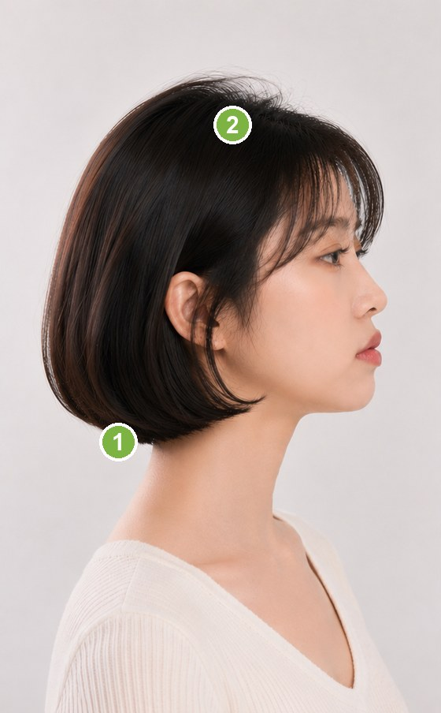
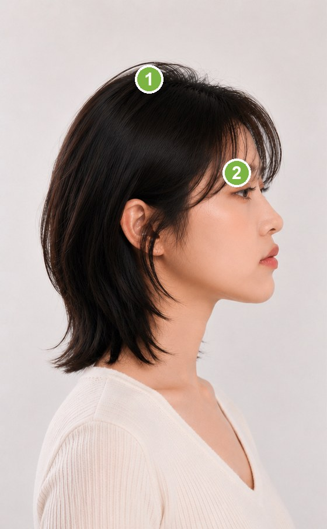
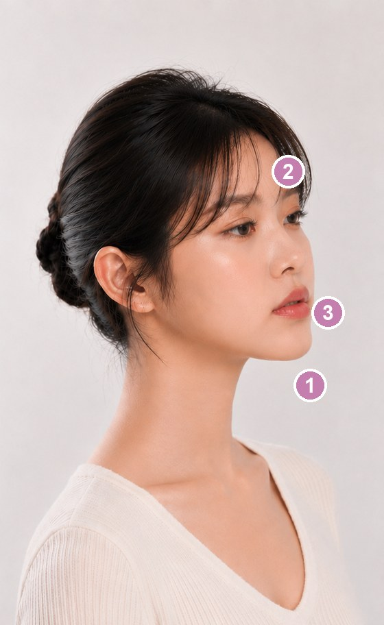

Your profile shape comes from bone structure and won't change with styling — but hair and makeup can balance how the side view reads. A guide, not a rule.옆얼굴형은 골격에서 비롯되어 스타일링으로 바뀌지 않아요. 다만 헤어와 메이크업으로 옆모습 인상의 균형은 잡을 수 있어요. 정답이 아닌 참고용 가이드입니다.横顔タイプは骨格によるもので、スタイリングでは変わりません。ただ、髪とメイクで横顔の印象バランスは整えられます。あくまで参考ガイドです。侧脸类型源于骨骼，造型无法改变它——但发型与妆容可以平衡侧脸给人的印象。仅供参考，并非定式。側臉類型源於骨骼，造型無法改變它——但髮型與妝容可以平衡側臉給人的印象。僅供參考，並非定式。
You'll jump to your measured profile type automatically — feel free to check the other one too.측정 결과에 따라 내 옆얼굴형 섹션으로 자동 이동해요. 다른 유형의 팁도 자유롭게 확인하세요.測定結果に応じて自分の横顔タイプへ自動で移動します。他のタイプのコツも自由にどうぞ。会根据测量结果自动跳到你的侧脸类型，另一种类型的技巧也欢迎查看。會根據測量結果自動跳到你的側臉類型，另一種類型的技巧也歡迎查看。
Your profile is Straight (ideal range).당신의 옆얼굴은 직선형(이상 범위)이에요.あなたの横顔は直線型（理想範囲）です。你的侧脸是直线型（理想范围）。你的側臉是直線型（理想範圍）。A straight profile is already well-balanced, so no corrective styling is needed. Below are tips for the convex and concave types for reference.직선형은 이미 균형이 잘 잡혀 있어 보정 스타일링이 필요 없어요. 아래 볼록형·오목형 팁은 참고용이에요.直線型はすでにバランスが取れているため、補正スタイリングは不要です。下の凸型・凹型のコツは参考用です。直线型本就均衡，无需修饰造型。下方凸面型与凹面型的技巧仅供参考。直線型本就均衡，無需修飾造型。下方凸面型與凹面型的技巧僅供參考。
Seen from the side, the mouth and nose area sits forward while the chin tends to recede — lips may sit ahead of the E-line. The aim: build up the jaw/chin with hair and makeup so the side view reads more balanced.옆모습에서 입·코 주변이 앞으로 나오고 턱은 뒤로 물러나 보이는 형이에요. E라인 기준으로 입술이 도드라질 수 있어요. 헤어와 메이크업으로 턱·턱선을 보강해 옆모습 균형을 잡는 게 핵심이에요.横顔で口元・鼻まわりが前に出て、あごが後ろへ引っ込みがちなタイプ。Eライン基準で唇が前に出やすいです。髪とメイクであご・フェイスラインを補い、横顔のバランスを整えるのがポイント。侧脸时口鼻区域偏前、下巴容易后缩——嘴唇可能超出E线。重点是用发型和妆容补足下颌与下巴，让侧脸看起来更平衡。側臉時口鼻區域偏前、下巴容易後縮——嘴唇可能超出E線。重點是用髮型和妝容補足下顎與下巴，讓側臉看起來更平衡。
Convex — the chin sits back while the mouth comes forward, so the G–Sn–Pog angle is sharper (under 167°).볼록형 — 턱이 뒤로 물러나고 입이 앞으로 나와, 안면각(미간–코밑–턱)이 더 좁아요 (167° 미만).凸型 — あごが後ろに、口元が前に出るため、顔面角（眉間–鼻下–あご）が鋭くなります（167°未満）。凸面型 — 下巴后缩、嘴部前突，面角（眉间–鼻底–下巴）更锐（小于167°）。凸面型 — 下巴後縮、嘴部前突，面角（眉間–鼻底–下巴）更銳（小於167°）。
💇 Hair헤어 추천ヘア发型推荐髮型推薦
Add volume and length around the jaw and nape to support the receding chin — a chin-length bob, jaw-skimming layers, or a soft inward (C-curl) flick that hugs toward the jaw.턱선~목덜미에 볼륨과 길이를 둬 물러난 턱을 보강 — 턱 길이 보브, 턱선을 스치는 레이어, 또는 턱 쪽으로 살짝 안으로 감기는 C컬.あご～えり足にボリュームと長さを出して、引っ込んだあごを補う — あご下ボブ、フェイスラインに沿うレイヤー、内に入るCカール。在下颌到颈后增加蓬松与长度来补足后缩的下巴——齐下巴波波头、贴合下颌的层次，或向内微卷的C形发尾。在下顎到頸後增加蓬鬆與長度來補足後縮的下巴——齊下巴波波頭、貼合下顎的層次，或向內微捲的C形髮尾。
Balance the upper face with fringe or a defined part — airy see-through or side bangs put a little weight up top so the forward mid-face isn't the only focus.앞머리·가르마로 윗부분 균형 — 시스루뱅이나 사이드뱅으로 윗쪽에 무게를 줘, 앞으로 나온 중안부에만 시선이 쏠리지 않게 해요.前髪・分け目で上部のバランスを — シースルーバングやサイドバングでトップに重みを置き、前に出た中顔面だけが目立たないように。用刘海或清晰分缝平衡上半部——空气刘海或侧分让顶部有点分量，避免视线只集中在前突的中庭。用瀏海或清晰分縫平衡上半部——空氣瀏海或側分讓頂部有點分量，避免視線只集中在前突的中庭。
Men: keep some length and shape along the jawline rather than a tight back-and-sides — a slightly fuller lower section makes the chin read stronger.남성: 턱선을 바짝 치는 컷보다 턱 주변에 약간의 길이·형태를 남겨요 — 하단이 살짝 도톰하면 턱이 더 또렷해 보여요.メンズ：サイドを刈り上げすぎず、あご周りに少し長さと形を残す — 下側に少しボリュームがあるとあごが強く見えます。男士：别把两侧推得太短，在下颌周围留点长度和形状——下半部略丰满会让下巴更有存在感。男士：別把兩側推得太短，在下顎周圍留點長度和形狀——下半部略豐滿會讓下巴更有存在感。
✕ Go easy on주의할 점注意需注意需注意
Slicked-back styles or a buzzed jawline that fully expose the chin — they make the recede more obvious.턱을 완전히 드러내는 올백·턱선 바짝 친 컷 — 후퇴한 턱이 더 도드라져요.あごを完全に見せるオールバックや刈り込み — 引っ込んだあごが目立ちます。完全露出下巴的全后梳或推光下颌——会让后缩更明显。完全露出下巴的全後梳或推光下顎——會讓後縮更明顯。

img/profile-convex-hair.jpg
💄 Makeup메이크업 추천メイク妆容推荐妝容推薦
Dab highlight on the chin tip to bring it forward and lengthen the lower face slightly. (champagne / ivory pearl)턱끝에 하이라이트를 톡톡 — 턱을 앞으로 당겨 보이게 하고 하안부에 살짝 길이감을. (샴페인·아이보리 펄)あご先にハイライトをトントン — あごを前に見せ、下顔面に少し長さを。（シャンパン・アイボリーパール）在下巴尖点上高光——让下巴前移、下庭略显长。（香槟·象牙珠光）在下巴尖點上高光——讓下巴前移、下庭略顯長。（香檳·象牙珠光）
Keep the mouth area calm — a muted lip color and minimal gloss, and skip heavy over-lining so the forward mouth doesn't stand out more. (MLBB / muted rose)입 주변은 차분하게 — 뮤트한 립 컬러와 절제된 글로스, 과한 오버립은 피해 앞으로 나온 입가가 더 강조되지 않게. (MLBB·뮤트 로즈)口元は落ち着かせる — マットめのリップと控えめなツヤ、やりすぎオーバーリップは避けて前に出た口元を強調しない。（MLBB・くすみローズ）让口部沉静——选哑光感唇色、少量唇釉，避免过度扩唇，以免前突的嘴更突出。（MLBB·灰调玫瑰）讓口部沉靜——選霧面感唇色、少量唇釉，避免過度擴唇，以免前突的嘴更突出。（MLBB·灰調玫瑰）
Go light with highlight on the nose tip and forehead — too much there pushes the mid-face even further forward.코끝·이마 하이라이트는 가볍게 — 과하면 중안부가 더 앞으로 튀어나와 보여요.鼻先・額のハイライトは軽く — 入れすぎると中顔面がさらに前へ出て見えます。鼻尖与额头的高光要轻——过多会让中庭更往前突。鼻尖與額頭的高光要輕——過多會讓中庭更往前突。
✕ Go easy on주의할 점注意需注意需注意
Shading under the chin tip — it pushes the already-receding chin even further back.턱끝 아래 셰이딩 — 이미 물러난 턱을 더 뒤로 보이게 해요.あご先の下のシェーディング — すでに引っ込んだあごをさらに後ろに見せます。下巴尖下方的修容——会让本就后缩的下巴更往后。下巴尖下方的修容——會讓本就後縮的下巴更往後。
From the side, the chin juts forward (prognathic) while the mid-face looks set back. The aim: lift volume up top and add mid-face dimension to balance it, and soften the chin's projection with makeup.옆모습에서 턱이 앞으로 나오고(주걱 인상) 중안부가 들어가 보이는 형이에요. 상안부 볼륨과 중안부 입체로 균형을 잡고, 메이크업으로 턱 돌출을 완화하는 게 핵심이에요.横顔であごが前に出て（しゃくれ気味）、中顔面が引っ込んで見えるタイプ。トップのボリュームと中顔面の立体感で整え、メイクであごの出っ張りをやわらげるのがポイント。侧脸时下巴前突（偏翘/地包感）、中庭显得后缩。重点是用顶部蓬松和中庭立体来平衡，再用妆容弱化下巴的突出。側臉時下巴前突、中庭顯得後縮。重點是用頂部蓬鬆和中庭立體來平衡，再用妝容弱化下巴的突出。
Concave — the chin juts forward while the mid-face sits back, so the G–Sn–Pog angle is flatter (over 177°).오목형 — 턱이 앞으로 나오고 중안부가 들어가, 안면각(미간–코밑–턱)이 더 펴져요 (177° 초과).凹型 — あごが前に出て中顔面が引っ込むため、顔面角（眉間–鼻下–あご）が平坦になります（177°超）。凹面型 — 下巴前突、中庭后缩，面角（眉间–鼻底–下巴）更平（大于177°）。凹面型 — 下巴前突、中庭後縮，面角（眉間–鼻底–下巴）更平（大於177°）。
💇 Hair헤어 추천ヘア发型推荐髮型推薦
Go for a layered cut worn down — shoulder-length with soft layers and volume through the top and crown, lifting the upper face and drawing the eye up, away from the projecting chin.내린 머리 레이어드컷 — 어깨 길이에 윗머리·정수리로 층과 볼륨을 줘 상안부를 띄우고, 시선을 위로 올려 앞으로 나온 턱에서 분산해요.おろしたレイヤーカット — 肩までの長さでトップ・頭頂に動きとボリュームを出し、上顔面を持ち上げて視線を上へ、出たあごから分散。披发的层次剪——齐肩长度，在头顶与上部做出层次和蓬松，抬高上庭、把视线引向上方，从前突的下巴分散。披髮的層次剪——齊肩長度，在頭頂與上部做出層次和蓬鬆，抬高上庭、把視線引向上方，從前突的下巴分散。
Use see-through or side bangs to cover a little forehead — softening the upper face balances it against the strong chin and spreads the focus.시스루뱅·사이드뱅으로 이마를 살짝 덮어요 — 윗부분을 부드럽게 해 또렷한 턱과 균형을 맞추고 시선을 분산해요.シースルーバング・サイドバングで額を少し隠す — 上部をやわらげて強いあごとバランスを取り、視線を分散。用空气刘海或侧分稍微遮额——柔化上半部，与有力的下巴取得平衡并分散视线。用空氣瀏海或側分稍微遮額——柔化上半部，與有力的下巴取得平衡並分散視線。
Keep the jaw area light — let the lower length fall softly instead of flicking volume out at the chin, so it isn't emphasized.턱 주변은 가볍게 — 턱 끝에서 바깥으로 뻗치는 볼륨 대신 하단을 부드럽게 떨어뜨려 턱이 강조되지 않게 해요.あご周りは軽く — あご先で外へはねるボリュームを避け、下側はやわらかく落としてあごを強調しない。下颌周围保持轻盈——别在下巴处向外翘出体积，让下半部柔顺垂落，避免强调下巴。下顎周圍保持輕盈——別在下巴處向外翹出體積，讓下半部柔順垂落，避免強調下巴。
✕ Go easy on주의할 점注意需注意需注意
Volume or flicks that flare out at the chin — they pull the projecting chin even further forward.턱 끝에서 바깥으로 뻗치는 볼륨·플립 — 나온 턱을 더 앞으로 끌어내요.あご先で外にはねるボリューム・フリップ — 出たあごをさらに前に強調します。在下巴处向外翘的体积或外翻——会把前突的下巴更往前带。在下巴處向外翹的體積或外翻——會把前突的下巴更往前帶。

img/profile-concave-hair.jpg
💄 Makeup메이크업 추천メイク妆容推荐妝容推薦
Soften the chin's projection with shading along the chin tip and jaw — 1–2 shades deeper than skin, well blended. (grey-brown)턱끝~턱선에 셰이딩으로 돌출을 완화 — 피부보다 1~2톤 어둡게, 자연스럽게 펴 발라요. (그레이 브라운)あご先～フェイスラインのシェーディングで出っ張りをやわらげる — 肌より1〜2トーン暗く、しっかりぼかす。（グレーブラウン）用修容在下巴尖到下颌弱化突出——比肤色深1~2号，自然晕开。（灰棕色）用修容在下巴尖到下顎弱化突出——比膚色深1~2號，自然暈開。（灰棕色）
Add highlight on the forehead and nose bridge to bring the set-back mid-face forward and give it dimension. (champagne pearl)이마·콧대에 하이라이트로 들어가 보이는 중안부를 앞으로, 입체감을 더해요. (샴페인 펄)額・鼻筋にハイライトで、引っ込んだ中顔面を前に出して立体感を。（シャンパンパール）在额头与鼻梁加高光，把后缩的中庭往前提、增加立体。（香槟珠光）在額頭與鼻樑加高光，把後縮的中庭往前提、增加立體。（香檳珠光）
Define the lips with a clear, healthy color to give the mid-face presence and even out the balance. (coral / rose)입술은 또렷하고 혈색 있는 컬러로 — 중안부에 존재감을 줘 균형을 맞춰요. (코랄·로즈)リップははっきり血色のある色で — 中顔面に存在感を出してバランスを整える。（コーラル・ローズ）用清晰有气色的唇色勾勒嘴唇——给中庭存在感、让整体更均衡。（珊瑚色·玫瑰色）用清晰有氣色的唇色勾勒嘴唇——給中庭存在感、讓整體更均衡。（珊瑚色·玫瑰色）
✕ Go easy on주의할 점注意需注意需注意
Highlight on the chin tip — it emphasizes the projection you're trying to soften.턱끝 하이라이트 — 완화하려는 돌출을 오히려 강조해요.あご先のハイライト — やわらげたい出っ張りを逆に強調します。下巴尖的高光——会强调你想弱化的突出。下巴尖的高光——會強調你想弱化的突出。

img/profile-concave-makeup.jpg
This guide is based on Korean & East Asian hair and makeup techniques. Styling can't change the underlying bone structure — it only balances how the side view reads. Adjust the intensity to your features, hair texture, and skin tone.이 가이드는 한국·동아시아 헤어·메이크업 기법을 바탕으로 해요. 스타일링은 골격 자체를 바꾸지 못하고, 옆모습 인상의 균형만 잡아줘요. 이목구비·모발·피부톤에 따라 강약을 조절하세요.本ガイドは韓国・東アジアのヘア＆メイク技法をベースにしています。スタイリングで骨格自体は変えられず、横顔の印象バランスを整えるだけです。目鼻立ち・髪質・肌色に合わせて強弱を調整してください。本指南以韩国及东亚发型与妆容技法为基础。造型无法改变骨骼本身，只能平衡侧脸的观感。请根据五官、发质与肤色调整强弱。本指南以韓國及東亞髮型與妝容技法為基礎。造型無法改變骨骼本身，只能平衡側臉的觀感。請根據五官、髮質與膚色調整強弱。
This guide is general reference, not a strict rule. Bone structure, features, and personal taste all matter — use it as a starting point.본 가이드는 일반적 참고용이며 절대적 기준이 아닙니다. 골격·이목구비·취향에 따라 달라질 수 있어요.本ガイドは一般的な参考であり、絶対的なルールではありません。骨格・目鼻立ち・好みによって変わります。本指南仅供参考，并非严格定式。骨骼、五官与个人喜好都会影响效果，请作为起点参考。本指南僅供參考，並非嚴格定式。骨骼、五官與個人喜好都會影響效果，請作為起點參考。